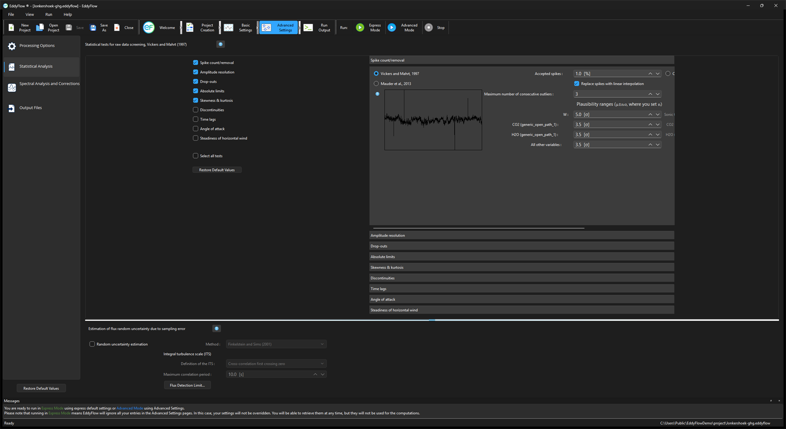

Statistical analysis¶
Statistical tests for raw data screening¶
Select (on the left side) and configure (on the right side) up to 9 tests for assessing statistical quality of raw time series. Use the results of these tests to filter out results, for which flags are turned on. All tests are implemented after Vickers and Mahrt (1997). See the original publication for more details and how to interpret results. See Despiking and raw data statistical screening.

Spike count/removal¶
The checkbox Spike count/removal (test_sr) determines whether the spike detection test is performed or not. If it is not, then spikes remain unchanged. Three spike detection methods are available, chosen with the radio buttons in the right-side panel (project-file key despike_vm):
- Vickers and Mahrt, 1997 (
despike_vm=0): detects up to 3 consecutive outliers against a plausibility range that is a multiple of the standard deviation in a moving window. Configure the multipliers in the panel. - Mauder et al., 2013 (
despike_vm=1): a median-absolute-deviation criterion. It does not require any settings. - Consecutive difference (EddyUH) (
despike_vm=2): a rate-of-change limit. A sample that steps further from the previous valid sample than a limit you state is counted as a spike. Its settings are the per-variable u step limit, v step limit and w step limit (m s⁻¹; keyssr_step_u,sr_step_v,sr_step_w), the Sonic temperature step limit (K; keysr_step_ts) and one step limit per gas, in the gas's own concentration unit (keygas_<i>_step_lim, where<i>is the gas record number). A limit of zero, displayed as "not despiked", excludes that column from the method. The step-limit fields are enabled only while this radio button is selected.
See Despiking for how the three differ. For all methods, define the flagging policy by specifying the maximum percentage of accepted spikes and whether spikes shall be replaced or simply eliminated from the dataset (in which case EddyFlow will replace spikes with an error code of -9999).
- If both Spike count/removal and Replace spikes with linear interpolation are checked, detected spikes are removed and replaced with linear interpolation.
- If the box Replace spikes with linear interpolation is NOT checked, then spikes are retained in the data (the test therefore functions as a quality test but not as a data filter).
See also Despiking.
Amplitude resolution¶
Detects situations in which the signal variance is too low with respect to instrument resolution. Configure the assessment procedure and the flagging policy in the corresponding section of the right-side panel. See Amplitude resolution.
Drop-outs¶
Detects relatively short periods in which time series stick to some value which is statistically different from the average value calculated over the whole period. Configure the assessment procedure and the flagging policy in the corresponding section of the right-side panel. See Drop-outs.
Absolute limits¶
Assesses whether each variable attains, at least once in the current time series, a value that is outside a user-defined plausible range. In this case, the variable is flagged. The test is performed after the despiking procedure. Thus, each outranged value found here is not a spike. It will remain in the time series and affect calculated statistics, including fluxes. Check the "Filter outranged values" to eliminate such outliers. See Absolute limits.
Skewness and kurtosis¶
Third and fourth order moments are calculated on the whole time series and variables are flagged if their values exceed certain thresholds that you can customize in the corresponding section of the right-side panel. See Skewness and kurtosis.
Discontinuities¶
Detect discontinuities that lead to semi-permanent changes, as opposed to sharp changes associated with smaller-scale fluctuations. Configure the assessment of discontinuities in the corresponding section of the right-side panel. See Discontinuities.
Time lags¶
This test flags scalar time series if the maximal w-covariances, determined via the covariance maximization procedure and evaluated over a predefined time-lag window, are too different from those calculated for the user-suggested time lags. Configure the expected time lags and the accepted discrepancies in the corresponding section of the right-side panel. See Time lags.
Angle of attack¶
Calculates sample-wise angle of attacks throughout the current flux averaging period, and flags it if the percentage of angles of attack exceeding a user-defined range is beyond a threshold that you can set on the right-side panel. See Angle of attack.
Steadiness of horizontal wind¶
Assesses whether the along-wind and crosswind components of the wind vector undergo a systematic reduction/increase throughout the file. If the quadratic combination of such systematic variations is beyond the user-selected limit, the flux-averaging period is hard-flagged for instationary horizontal wind. See Steadiness of horizontal wind.
Extra raw-signal diagnostics (RFlux)¶
Exact UI label: Extra raw-signal diagnostics (RFlux). Project-file key: test_rf (group RawProcess_Tests). Off by default, and not switched on by Select all.
Computes, for every variable (u, v, w, sonic temperature and each configured gas), a set of additional diagnostics of instrument malfunction after Vitale et al. (2020): AL1, DDI, HF5, HF10, HD5, HD10, DIP and, for each variable paired with w, CCF. These diagnostics are informational: no period is hard-flagged because of them and nothing feeds back into the flux computation. Their only consumer is the optional Vitale et al. (2020) quality-flag system, which reads AL1, DDI, HF, HD and DIP (not CCF) when this test is on.
When the option is on, one column family per diagnostic is appended at the very end of each row of the FLUXNET output file, after the biomet block: U_<diagnostic>, V_<diagnostic>, W_<diagnostic>, T_SONIC_<diagnostic>, then one column per configured gas (for example U_AL1, T_SONIC_DIP). When the option is off these columns do not exist and the CCF computation is skipped. A variable that is not measured, or has fewer than 3 usable samples in the period, gets the missing-value token. Each diagnostic is defined in Extra raw-signal diagnostics (RFlux).
Post-flux despiking (STL)¶
Exact UI label: Post-flux despiking (STL). Project-file key: test_pfd (section [Project]). Off by default.
Looks for outliers in the computed NEE, H and LE series of the whole run, not in the raw high-frequency data, so it finds spikes the raw-data tests cannot see. After all fluxes have been computed, each of the three series is decomposed into seasonal, trend and remainder components with STL (Cleveland et al., 1990) and outliers in the remainder are identified with a Laplace-distribution test (Vitale et al., 2020). The method is described in Post-flux despiking (STL).
Enabling it writes one additional file, <project id>_flux_despiking<timestamp>.csv, next to the other outputs. It changes no existing output file: flagged values are not removed from the full output or FLUXNET files. The columns are TIMESTAMP, NEE, NEE_SPIKE, NEE_CLEANED, H, H_SPIKE, H_CLEANED, LE, LE_SPIKE, LE_CLEANED; a *_SPIKE column is 1 for a flagged period and 0 otherwise, and a *_CLEANED column is the value with flagged periods set to missing. The step needs an averaging period that gives at least 4 periods per day and at least 10 days of data (480 half-hourly periods); shorter or coarser runs are skipped and the run log says why. The step is carried out by the flux computation and correction (FCC) step, once, after the last period, so a run that finishes entirely inside the raw-processing step does not produce the file.
Storage-flux cleaning¶
Exact UI label: Storage-flux cleaning. Project-file key: test_stor_clean. Off by default; raw-processing step only.
After the run, tests the storage term of every configured gas for outliers and fills them by interpolation; the method is described in Storage-flux cleaning. Enabling it writes one additional file per run, <project id>_storage_cleaning<timestamp>.csv, with TIMESTAMP and, for each configured gas, <gas>_strg, <gas>_strg_spike and <gas>_strg_cleaned (gas name in lower case). It does not change any existing output. It needs at least 20 periods and at least 4 periods per day; otherwise it is skipped and the run log says why.
Estimation of flux random uncertainty due to sampling errors¶
EddyFlow can calculate flux random uncertainty according to several methods, selected from the Method dropdown (project-file key ru_meth):
- Finkelstein and Sims (2001) (
ru_meth=1) and Mann and Lenschow (1994) (ru_meth=2): sampling errors; see Finkelstein and Sims (2001) and Mann and Lenschow (1994). - Billesbach (2011) (
ru_meth=4): the random-shuffle noise floor, a limit below which a flux cannot be told from zero rather than a sampling error. - Lenschow et al. (2000) - instrument noise (
ru_meth=5): the analyser's own white noise, after Lenschow et al. (2000) as applied by Mauder et al. (2013).
The value ru_meth=3 is the Mahrt (1998) estimate, which is not offered in the dropdown. See Random uncertainty estimation for how each method differs.
The Flux Detection Limit... button below opens a separate dialog for a related but distinct diagnostic: not the uncertainty on a computed flux, but the smallest flux that could be resolved at all given the instrument's own noise. See Flux detection limit and the Flux Detection Limit Settings dialog.